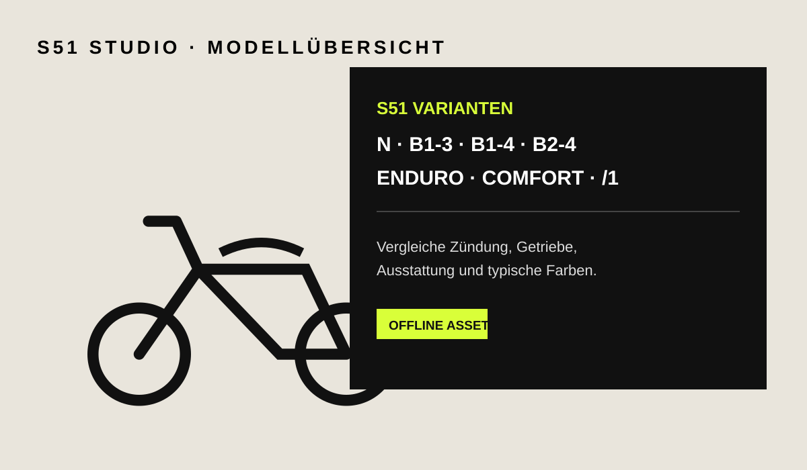

WERKERS WERKSTATTSIMSON
SIMSON
KULT & TECHNIK
Modelle, Werkstattwissen, Diagnose und deine digitale Garage.
Modelle, Werkstattwissen, Diagnose und deine digitale Garage.
Getriebe, Zündung, Ausstattung und typische Farbtöne.
Baureihen, Modellkarten, technische Daten und integrierte Kurzinfos.
Referenz für Restauration, Kauf und Originalitätsprüfung.

Bauteile auswählen, Vorschau sofort aktualisieren, Konfiguration speichern und in die Garage übernehmen.
Der Konfigurator bietet jetzt zusätzlich eine echte, offline-fähige WebGL-3D-Ansicht. Räder, Tank/Seitendeckel, Motor und Auspuff werden als getrennte 3D-Komponenten gerendert; die 2D-Hybridansicht bleibt als schnelle Alternative verfügbar.
LIVE · OFFLINEWert, Kosten, Restaurationsstand, offene Arbeiten, Wartungen und Dokumente je Fahrzeug.
Kauf, Reparaturen, Wartungen, Dokumente, Fotos und Restaurationsschritte chronologisch zusammengeführt.
Kaufpreis, Reparaturen, Teile und weitere Ausgaben je Fahrzeug zusammenfassen.
Projektphasen abhaken, Budget hinterlegen und den Restaurationsstand je Fahrzeug verfolgen.
Dokumente lokal in der Fahrzeugakte speichern. Für größere Dateien empfiehlt sich weiterhin ein externes Backup.
Wartungsaufgaben mit Fälligkeit nach Datum verwalten.
Beantworte wenige Fragen. Die App führt dich zum passenden Fehlerbild und zur vorhandenen Prüfkette.
Teile aus der Baugruppenreferenz markieren, Stückzahl und Notiz ergänzen und als Liste exportieren.
Interaktive schematische Baugruppenansichten für Motor, Zündung, Fahrwerk und Kraftstoffsystem.
Vorprüfungen und priorisierte Fehlerbilder abhängig vom ausgewählten Fahrzeug.
Motor, Getriebe, Zündung, Elektrik, Instrumente und Enduro-/Comfort-Merkmale im Direktvergleich.
Serienreferenzen mit bewusstem Hinweis auf Umbauten und spätere Ausführungen.
Nur Werte, die ohne konkrete Motor-/Fahrzeugunterlage verantwortbar dargestellt werden können. Kritische Verschraubungen werden ausdrücklich auf die passende Reparaturunterlage verwiesen.
Wähle ein System und tippe eine Baugruppe an, um ihre Rolle und Verbindungen hervorzuheben.
S50, S51, KR51/1 und KR51/2 mit Motor-, Vergaser-, Zündungs- und Ausstattungsreferenzen.
Keine Shop-SKU-Liste, sondern eine belastbare Auswahlhilfe: System, Fahrzeugbezug und das Merkmal, das du am Fahrzeug kontrollieren solltest.
Modellübergreifende Prüfpunkte. Exakte Wechselintervalle bleiben motorspezifischen Unterlagen vorbehalten.
Vereinfachte Stromflussübersichten für die Fehlersuche. Für Klemmenbelegung immer den exakten Fahrzeugplan verwenden.
Nach Themen filterbare Referenzkarten für Diagnose, Wartung, Kauf und Restauration.
Prüfen statt Teiletausch auf Verdacht.
Symptom auswählen und Prüfschritte abhaken.
FIN erfassen, Modell wählen und angegebenes Baujahr gegen den Produktionszeitraum prüfen.
12 Baugruppen werden gewichtet bewertet. Zu jedem Punkt kannst du „passt“, „unklar“ oder „abweichend“ wählen.
Fahrzeuge, Kosten, Restaurationsfortschritt, Dokumente, Fotos und Wartungen lokal speichern.